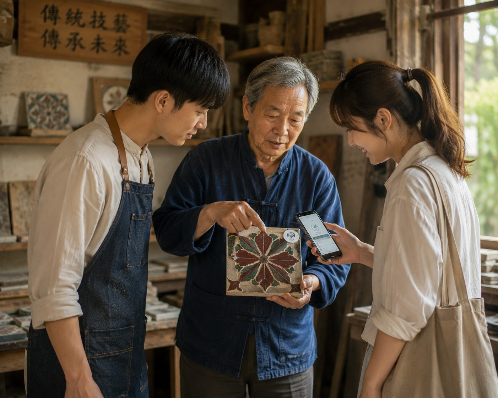
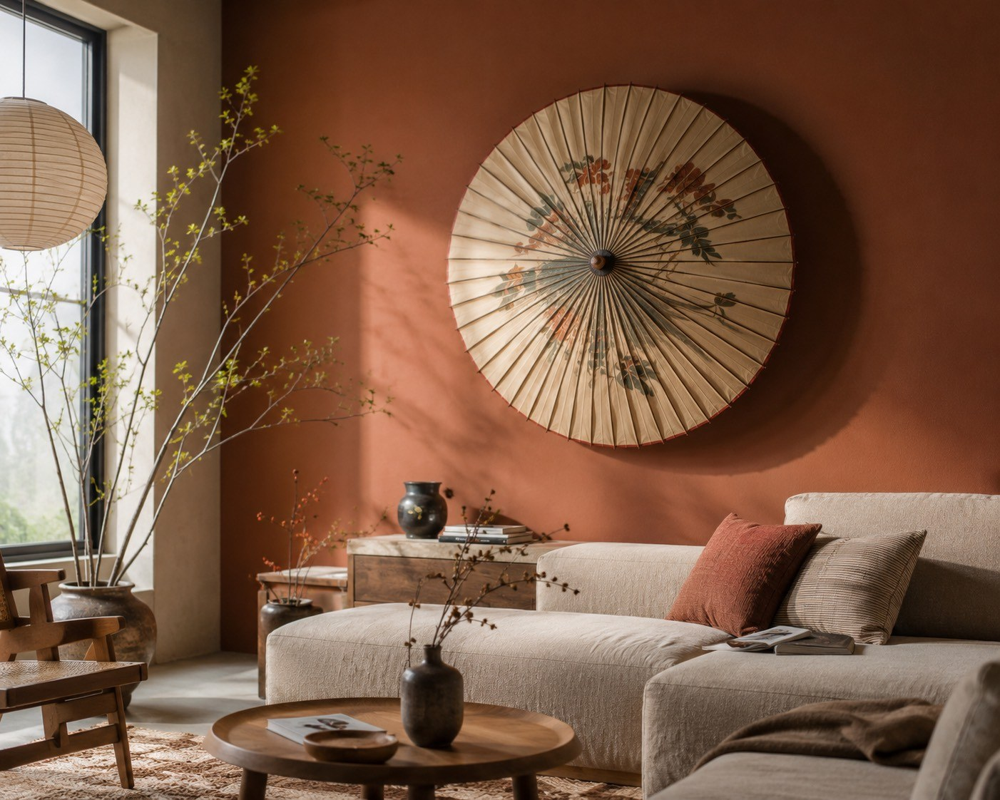
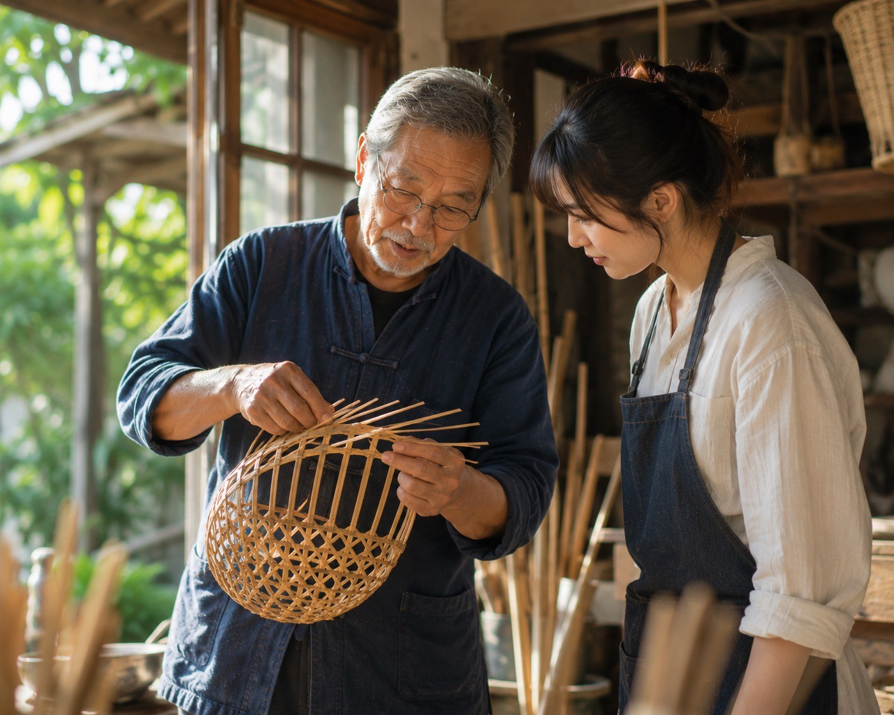
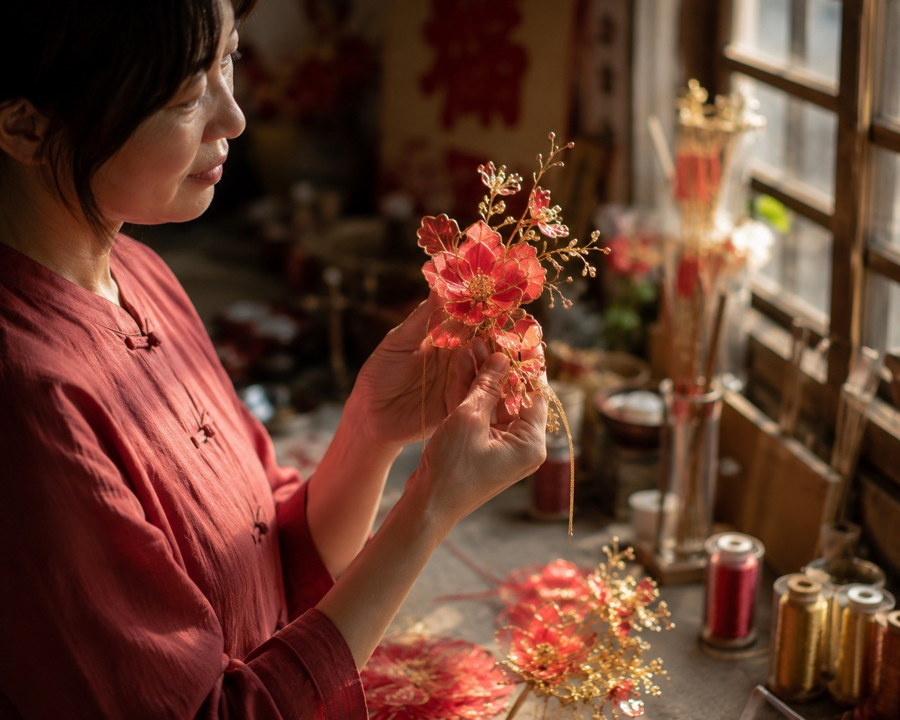
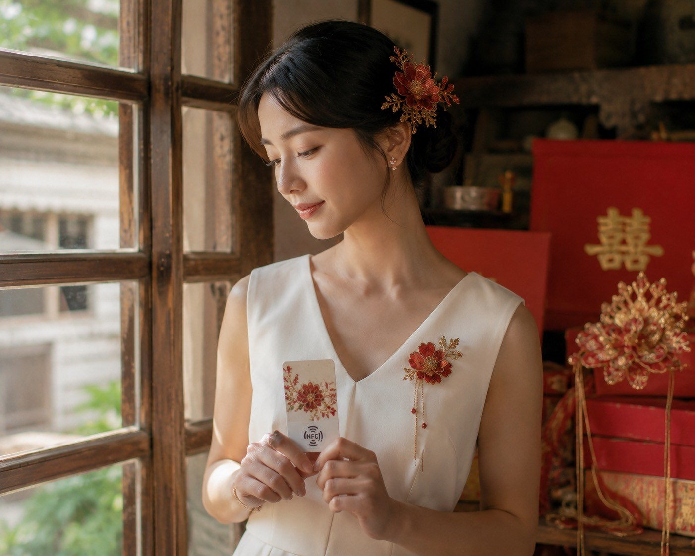
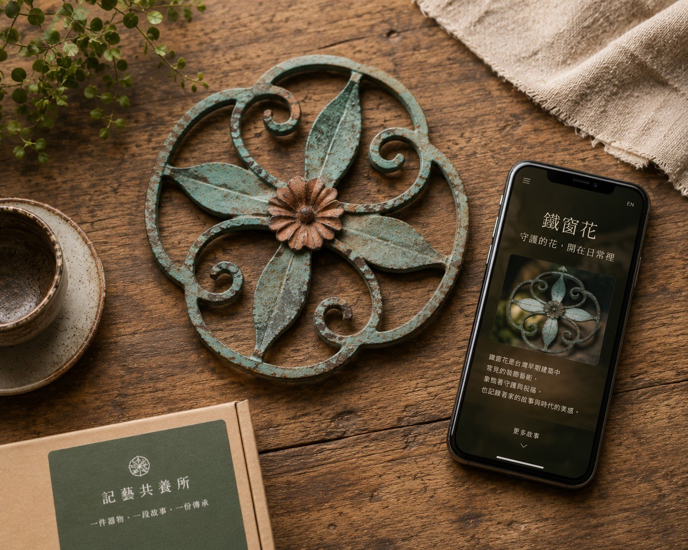
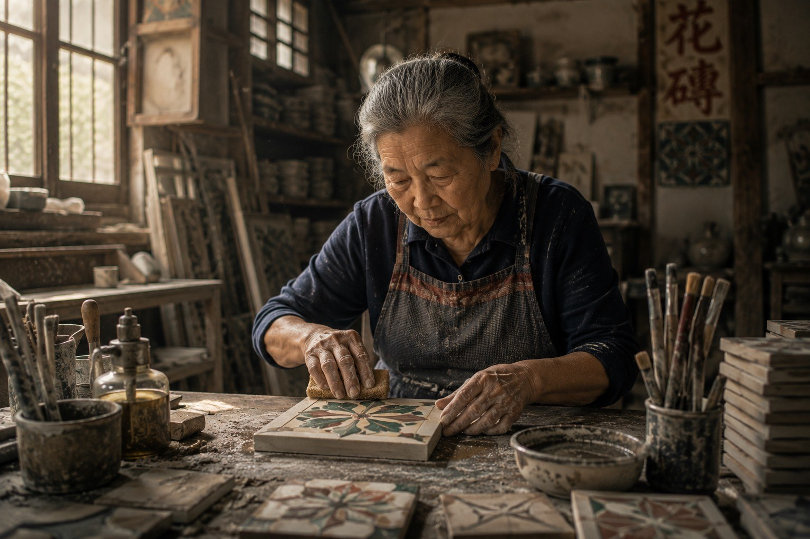
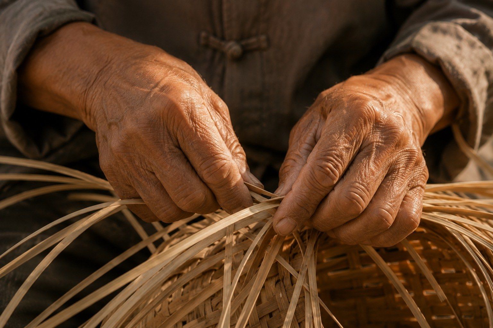

檔名：images/story.jpg';">「我們想做的不是保存一件老東西，而是讓一門技藝重新被需要。」
許多台灣傳統技藝並不是因為沒有價值而消失，而是逐漸失去被日常使用、被市場理解、被下一代學習的機會。
記藝共養所希望成為職人與消費者之間的橋樑。我們讓商品不只是商品，而是帶著故事、工序、職人生命與復甦進度的文化入口。
記藝共養所將職人手藝、故事與製作過程，轉化為能被收藏、被感應、被持續追蹤的共養型物件。 每一次支持，都讓一門技藝重新被需要。

檔名：images/story.jpg';">「我們想做的不是保存一件老東西，而是讓一門技藝重新被需要。」
許多台灣傳統技藝並不是因為沒有價值而消失，而是逐漸失去被日常使用、被市場理解、被下一代學習的機會。
記藝共養所希望成為職人與消費者之間的橋樑。我們讓商品不只是商品，而是帶著故事、工序、職人生命與復甦進度的文化入口。
傳統技藝面臨的問題，不只是曝光不足，而是缺乏能將文化情感轉換為持續收入的機制。
機械量產與現代生活用品逐漸取代手工技藝，讓許多職人的作品失去穩定市場。
職人懂技藝，卻未必有能力處理品牌包裝、數位內容、外語介紹與社群行銷。
一般文創商品多是一次性消費，活動也常在結束後停止互動，難以形成長期支持。
共養不是單純捐款，也不是一般購物，而是一種能看見故事、資金流向與復甦進度的文化支持方式。
將油紙傘、竹編、春仔花、花磚、木雕等技藝轉化為可收藏、可使用的生活物件。
將布袋戲、傳統音樂、祭典等無形文化轉化為 NFC 手環、收藏卡、票卡或徽章。
透過工作坊、地方導覽、師傅見面會與年度會員，將一次支持延伸為長期參與。

支持者只要用手機感應 NFC，就能進入專屬頁面，看見技藝故事、職人介紹、製作工序、資金用途、傳承進度與活動通知。
首頁只呈現精選技藝，完整商品請進入商品頁瀏覽。

從日常器物到文化祝福，支持工序紀錄與職人收入。

讓編織工序重新回到日常生活。

讓婚嫁祝福與女性手藝被年輕世代看見。
??????????? NFC ???????????????????????







以下數字可依問卷、網站測試與日後實際合作結果調整。